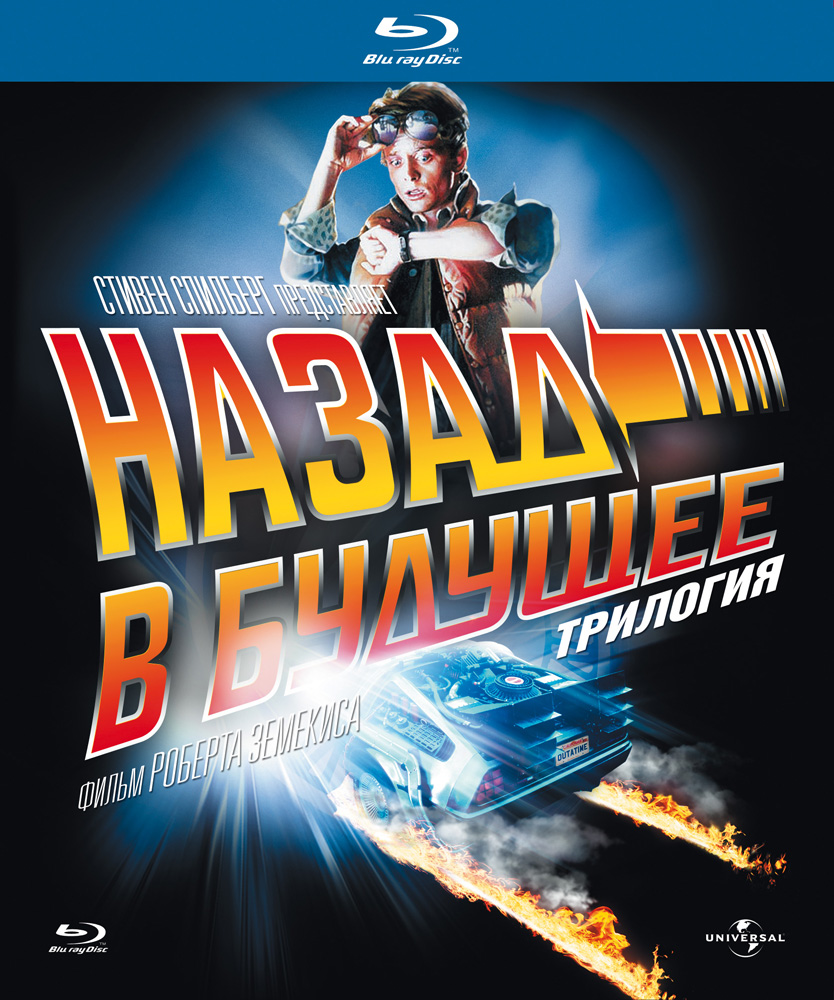

О фильме
Назад в будущее. Трилогия |
|
|---|---|
Back To The Future Trilogy |
|
|  | |
| Жанр | Приключения |
| Фантастика | |
| Комедия | |
| Режиссер | Роберт Земекис |
| Продюсер | Боб Гейл |
| Нил Кэнтон | |
| Исполни- тельные продюсеры |
Стивен Спилберг |
| Фрэнк Маршалл | |
| Кэтлин Кеннеди | |
| Автор сценария |
Роберт Земекис |
| Боб Гейл | |
| В главных ролях |
Майкл Дж. Фокс |
| Кристофер Ллойд | |
| Томас Ф. Уилсон | |
| Лиа Томпсон | |
| Клаудия Уэллс | |
| Криспин Гловер | |
| Элизабет Шу | |
| Оператор | Дин Канди |
| Композитор | Алан Сильвестри |
| Кинокомпания | Amblin Entertainment (производство) |
| Universal Pictures (распространение) |
|
| Длительность | 116/108/118 (мин.) |
| Общее: 342 мин. | |
| Бюджет | 19/40/40 млн долларов |
| Общий: 99 млн долларов | |
| Сборы | 957 587 347 долларов |
| Страна | США |
| Язык | Английский |
| Год | 1985/1989/1990 |
«Назад в будущее» — научно-фантастический фильм в трёх частях о путешествиях во времени, описывающий альтернативные реальности маленького американского городка Хилл-Вэлли и нескольких проживающих там семей, поставленный режиссёром Робертом Земекисом и спродюсированный Стивеном Спилбергом, Фрэнком Маршаллом и Кэтлин Кеннеди. Первый фильм вышел в 1985 году в кинотеатрах Соединённых Штатов и Канады.
Сюжет
Фильмы
Премьера фильма «Назад в будущее» состоялась в 1985 году, режиссёром и соавтором сценария стал Роберт Земекис. По сюжету доктор Эмметт Браун 30 лет изобретал машину времени и, наконец, в 1985 году он закончил работу над ней, установив энергетический флюксуатор (в других переводах — потоковый накопитель и поточный конденсатор) в автомобиле DeLorean DMC-12.
Сначала он демонстрирует машину своему юному другу, старшекласснику Марти Макфлаю, но именно тогда на них нападают охотящиеся за «Доком» (доктором) террористы. Дока убивают, а Марти спасается на машине времени и попадает в 1955 год. Возвращение крайне проблематично, потому что для путешествия во времени нужен плутоний. Кроме того, из-за нелепой случайности Марти мешает встрече собственных родителей. Этим он ставит под угрозу своё существование, и находит ещё молодого Эмметта Брауна, надеясь с его помощью решить эти две проблемы, а также спасти Дока в будущем, предупредив об опасности. Марти необходимо успеть влюбить друг в друга своих родителей, противостоять негодяю Биффу Таннену и вернуться в своё время.
Продолжение, «Назад в будущее 2», вышло в 1989 году. Успешно справившись со всеми трудностями, Марти возвращается домой, в 1985 год. Но неожиданное появление Дока заставляет юношу рассказать его подружке Дженнифер о существовании машины времени — героям приходится отправиться в 2015 год, чтобы спасти своих будущих детей от тюрьмы. Между тем старик Бифф Таннен узнаёт о существовании машины времени, угоняет её и изменяет собственную судьбу, превращая себя в одного из самых богатых людей США. Остальной же мир становится настоящим кошмаром, в котором отец Марти убит, а Док признан сумасшедшим.
Док и Марти отправляются в прошлое, чтобы помешать Биффу из будущего изменить настоящее. По странному стечению обстоятельств, вернуться им предстоит всё в тот же 1955 год. После удачного исхода их миссии в машину времени с находящимся в ней Доком случайно ударяет молния, и Док оказывается в 1885 году.
В заключительной части, «Назад в будущее 3», выпущенной в 1990 году, оставшийся в 1955 году Марти Макфлай ищет машину времени, оставленную Доком в 1885 году. Случайно он узнаёт, что в этом году Док был убит бандитом Бьюффордом Танненом за долг в 80 долларов. Марти отправляется в прошлое — на Дикий Запад, чтобы спасти своего друга. Но пожилой учёный влюбляется в учительницу Клару Клейтон, а возвращение домой станет невыполнимым заданием для двух путешественников во времени.
После нападения индейцев DeLorean остаётся без топлива, которое ещё даже не изобрели. Однако Марти и Док решили придать ускорение DeLorean, поставив машину на рельсы впереди несущегося к пропасти локомотива.
Продолжения
Телевизионное продолжение трилогии под названием «Назад в будущее: Анимационный сериал» выходило в эфир с 1991 по 1992 года, за это время было снято 26 эпизодов. Кристофер Ллойд, Томас Ф. Уилсон и Мери Стинберген озвучили своих персонажей. Кроме того, Ллойд исполнил роль Дока в видеосегментах в начале и конце каждой серии — шоу носит образовательный характер, так как в «живых» сегментах Ллойд рассказывает о природных явлениях и законах физики. Мультипликационный сериал повествует о приключениях семейства Браунов, вернувшегося в Хилл-Вэлли. Одними из центральных персонажей становятся сыновья Дока и Клары — Жюль и Верн, а акценты повествования перемещены с семьи Макфлаев на Браунов. Кроме того, с 1991 по 1993 года издательство «Harvey Comics» занималось выпуском серии комиксов «Back To The Future: The Animated Series Comic». Всего вышло 7 выпусков, первый из которых также был издан в качестве специального издания. Как бы там ни было, 4 журнала серии являются адаптацией эпизодов мультсериала, и лишь 3 из них предлагают новую историю.
В 2010 году компания «Telltale Games», известная своими игровыми хитами в жанре квеста, начала в сотрудничестве с Бобом Гейлом заниматься разработкой квеста-продолжения, состоящего из пяти эпизодов. Первый эпизод увидел свет 22 декабря 2010 года, а последний — 23 июня 2011 года. Кристофер Ллойд и Клаудия Уэллс озвучили своих персонажей, а работа Эй Джея Локазио была восторженно встречена критиками и поклонниками, отметившими невероятное голосовое сходство с Майклом Джей Фоксом. Сам Фокс появился в качестве специально приглашённого актёра в небольшой роли Уильяма Макфлая в финале игрового сезона — пятом эпизоде «Outatime». Действие игры происходит после событий третьего фильма и до мультсериала. В 1986 году Марти скучает по Доку, оставшемуся вместе с Кларой в 1885 году. Неожиданно перед гаражом Брауна появляется DeLorean, внутри которого Марти обнаруживает любимого пса своего друга, Эйнштейна, и послание от Дока, застрявшего в 1931 году. Так начинается серия приключений героев во времени.
Кроме того, с 1985 по 2001 для различных приставок — Amstrad CPC, Commodore 64, ZX Spectrum, NES, MSX, Amiga, Atari ST, DOS, Sega Master System, Super Nintendo Entertainment System, Nintendo GameCube — было выпущено большое количество игр, а некоторые из них адаптированы для домашнего компьютера. Их сюжет был основан на событиях фильмов, но ничего не добавлял к нему. По мнению многих критиков и самих создателей трилогии, качество игр оставляло желать лучшего.
Альтернативные реальности
Действие трилогии происходит в вымышленном городке Хилл-Вэлли в Калифорнии. Сюжет представляет собой цепь альтернативных реальностей, в которых показаны сам город, а также его жители, в частности, члены семейств Макфлаев, Браунов и Танненов.
Реальность № 1
(По схеме реальность 1 начинается с перемещения пса Эйнштейна) — Здесь дела обстоят так, как показано в начале первой серии: члены семейства Макфлаев не блещут успехами, дядю Джоуи всё ещё не выпустили из тюрьмы, у Лоррейн проблемы с алкоголем, а Бифф Таннен узурпирует труд Джорджа Макфлая.
Реальность № 2
Вернувшись домой из 1955 года в конце первой части трилогии, Марти замечает изменения в своей жизни и жизни родственников: Джордж стал успешным писателем, дела у его брата и сестры Дэйва и Линды идут в гору, Лоррейн свежа и молода, Бифф работает на Джорджа, а Марти ждёт поездки с Дженнифер на озеро на машине своей мечты.
Реальность № 3
Она же логичное продолжение Реальности № 2.
В этой реальности с детьми Марти и Дженнифер в 2015 году возникает множество проблем, и Марлин и Марти-младший оказываются в тюрьме.
Она изменяется после того, как Грифф Таннен вместе со своими дружками, гоняясь за Марти, влетает в остеклённое здание мэрии, за что его арестовывают. Будущие дети Марти-старшего и Дженнифер спасены: теперь в тюрьму сядет Грифф.
Здесь же берёт начало реальность № 4, когда старый Бифф угоняет DeLorean, чтобы отдать самому себе из 1955 года спортивный альманах, с помощью которого он сможет стать одним из самых влиятельных людей Америки.
Док, Марти и Дженнифер возвращаются домой, не подозревая, что события 1955 года были изменены Биффом из 2015 года. Таким образом, путешественники оказываются в новой альтернативной реальности № 5.
Реальность № 4
События этой реальности меняются, когда Док и Марти возвращаются в 26 октября 1985 из 2015 года и порождают реальность № 5. В этой реальности у молодого Биффа в руках оказывается спортивный альманах, который ему дал старый Бифф, прибывший из будущего, с результатами всех крупных спортивных событий. В результате в Хилл-Вэлли царит разруха, Лоррейн — жена Биффа, Джордж убит, а Дэйв и Линда не могут расплатиться с долгами.
Реальность № 5
Здесь Марти и Док решают отправиться в 1955 год — день, когда молодой Бифф заполучил альманах. Если они заберут книгу у Биффа — что они успешно и делают — тогда событиям реальности № 4 не суждено будет произойти, и всё пойдёт по другому пути в реальности № 6.
Реальность № 6
Здесь восстановлены события реальностей № 4 и № 5, не вмешиваясь в реальность № 2. В конце второй серии DeLorean вместе с Доком на борту исчезает в пространстве после удара молнии. Так возникает реальность № 7.
Реальность № 7
В этой реальности Марти и Дока из 1955 года разделяют 70 лет до того, как юноша отправляется в 1885 год: Док славно поживает в Хилл-Вэлли времён Дикого Запада 8 месяцев, подрабатывая кузнецом. Судя по всему, присутствие Дока мало повлияло на ход истории, так как эта реальность практически ничем не отличается от реальности № 6. Марти покидает 1955 год и отправляется спасать друга, тем самым порождая реальность № 8.
Реальность № 8
Марти пытается предотвратить гибель Дока, которому было суждено погибнуть в реальности № 7 от рук бандита Бьюфорда Таннена. В этой реальности большую часть времени герои проводят в заключительной серии трилогии. Это также последняя альтернативная реальность трилогии, плавно перетекающая в иную реальность, в которой происходит действие мультсериала, являющегося неофициальным продолжением трилогии.
В этой реальности Марти меняет своё будущее и будущее своей семьи, отказавшись участвовать в гонках с Нидлзом, из-за чего альтернативная реальность № 3 исчезает, так как надпись «Ты уволен!» на бланке, который Дженнифер захватила из 2015 года, исчезает.